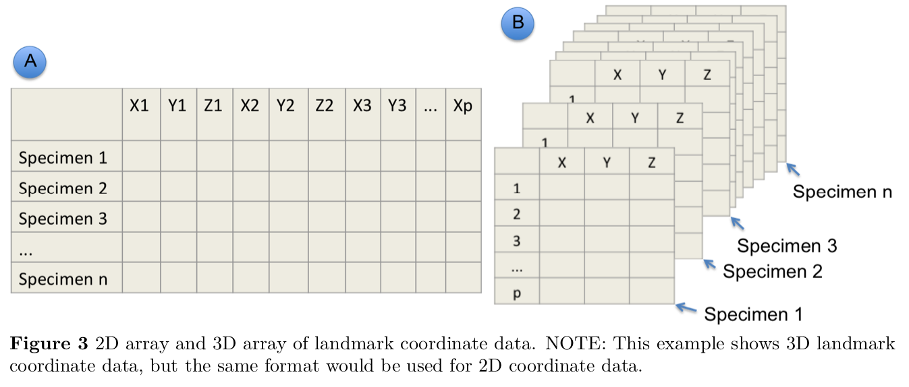
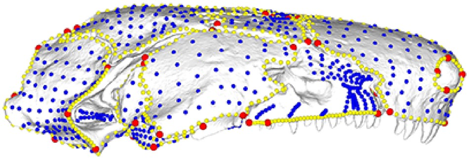
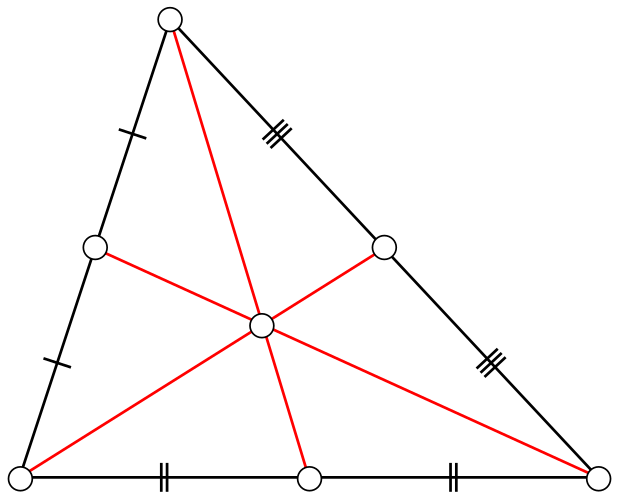
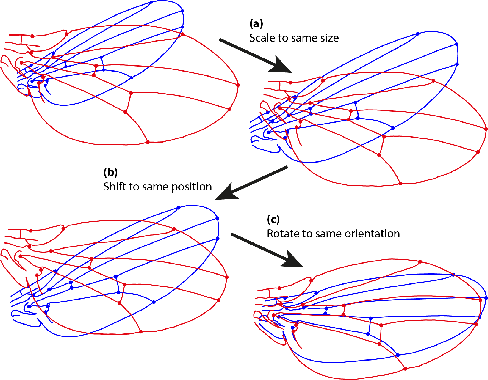
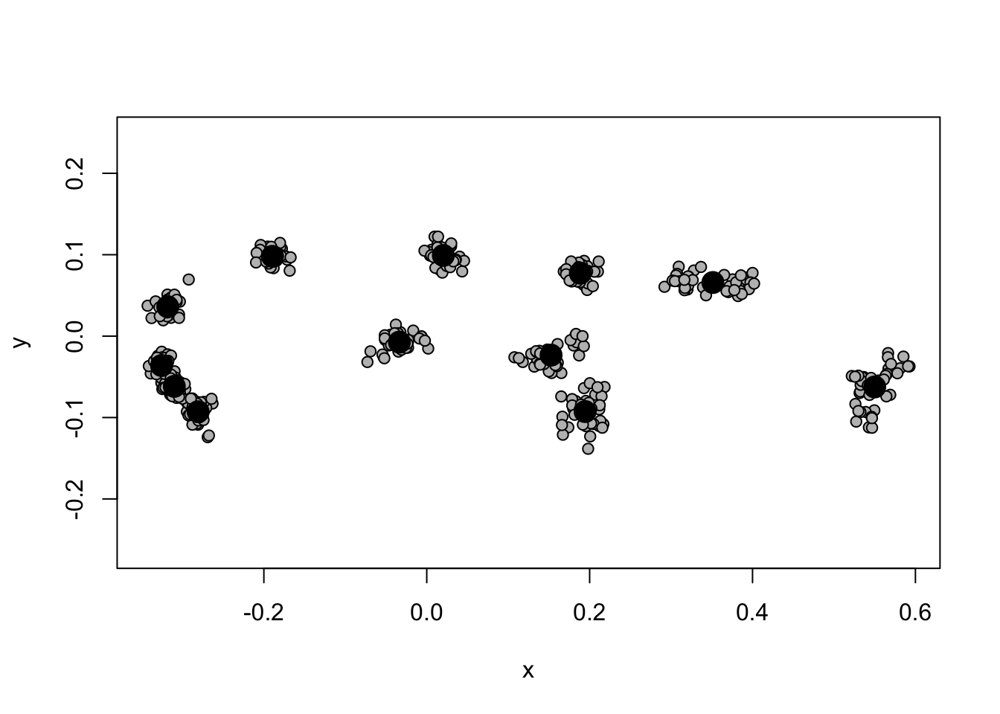
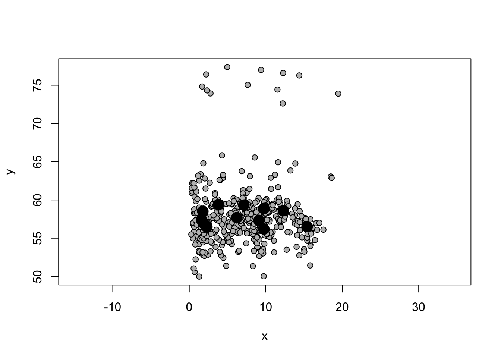
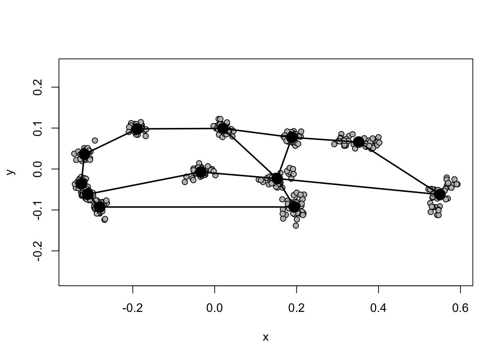
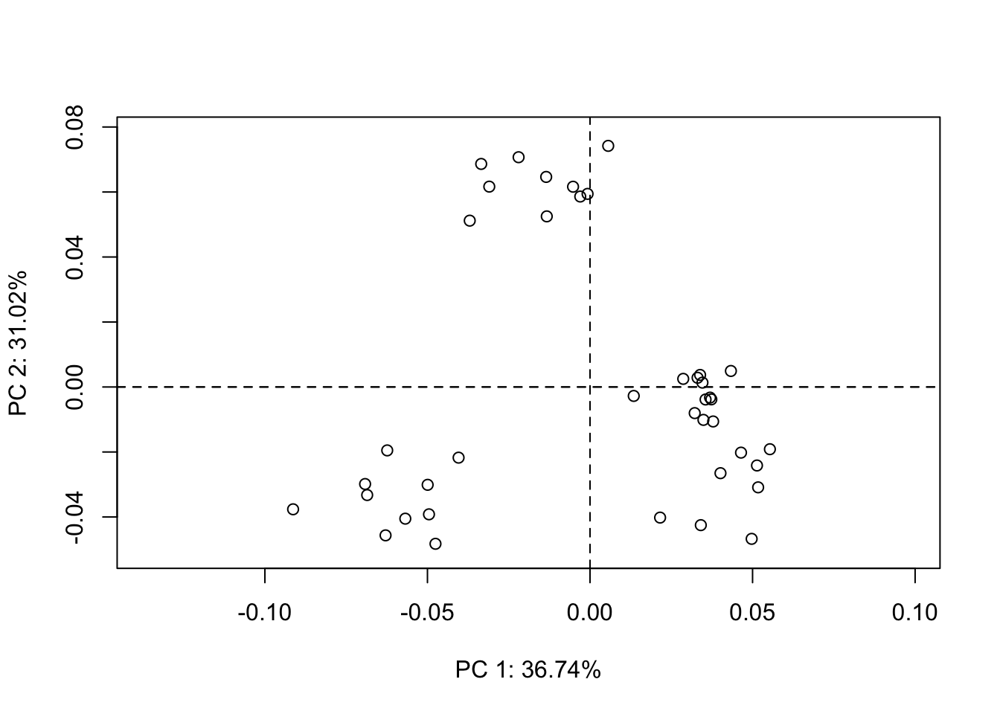
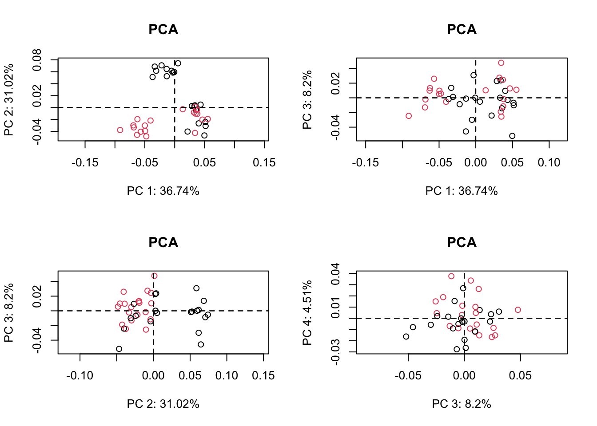
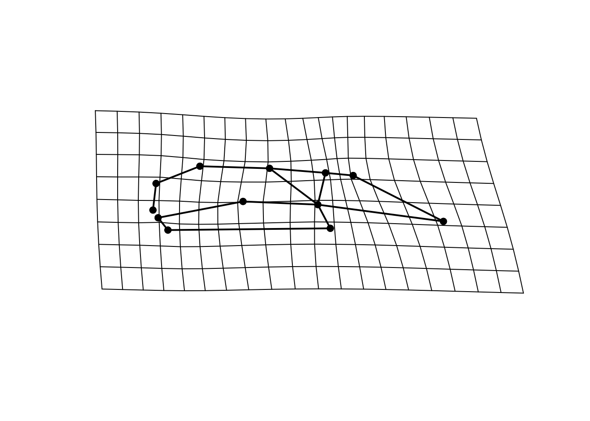

![Rodent lower jaw (mandible). Lateral view of a Nectomys squamipes mandible, showing the 10 landmarks used in this work. 1) Anterior edge of the incisive alveolus; 2) Most posterior point of the diastema; 3) Junction between the mandible and the m1 root; 4) Junction between the molar base and the coronoid process; 5) Most posterior point at the articular process; 6) Most anterior point in the angular notch; 7) Most posterior point at the angular process; 8) Angular process base; 9) Inner edge of the mandibular symphysis; 10) Posterior edge of the incisive alveolus](../../images/rodentmandible.jpg)
{kind=link}
require(geomorph)
files <- c("red-fox-mandible-lateral.jpg")
# files <- list.files(pattern = "*.jpg")
# for multiple files in your image directoryAcknowledgements
References for this Material:
- Bardua et al (2019) A Practical Guide to Sliding and Surface Semilandmarks in Morphometric Analyseshttps://academic.oup.com/iob/article/1/1/obz016/5526881
- Emma Sherratʻs quick guide to Geomorph
Learning objectives
Learning objectives
At the end of this lesson you will:
- Be able to collect landmark data
- Understand the terminology for landmark data
Preparation
Packages:
geomorph
rgl
Matrix
Please install if you donʻt have them. install.packages(c("geomorph","rgl","Matrix"), dependencies=T)
Mac Users: Please also install Xquartz https://www.xquartz.org, a windowing system for rgl.
Files:
red-fox-mandible-lateral.jpg Please download into your folder for this exercise. Source: Jim Russell
Overview
Traditional morphometrics uses linear measurements such as body length, hind limb length, etc. to characterize morphological variation. This works well for many questions, especially ones that relate to lever mechanics, such as locomotion or bite force, etc. but does not capture 3D variation well such as the geometric shape of a skull or the details of seed shape.
Geometric morphometrics aims to characterize more complex shapes by the use of landmarks, locations on the specimens determined by the researcher to reveal key insights or capture the full range of variation.
In order to do this, we still need methods to characterize size vs. shape. For geometric morphometrics that is typically Procrustes superposition. Some other differences also involve the data. Whereas one can typically take linear measurements directly on the specimen (with calipers or a ruler), collecting landmark data usually involves some image capture.
Capturing images
The most important thing is consistency and a protocol that minimizes error. While the specific protocol will vary by the type of object and technology (cameras, uCT, etc.), some general principles are :
- Specimen Layout
- Be as consistent as possible in the preparation of specimens and their arrangement
- Place every specimen on the same side. (Capture the same aspect of each specimen)
- Same pose or posture
- Mouths open? Closed?
- Fins or dewlaps exposed to show shape and articulatio, etc.
- Size and Metadata
- Include a size standard (e.g., a ruler), ideally the same item, with X-Y information
- Include the specimen ID in the photo itself (written on a card, etc.)
- Camera
- Camera in same position and same angle, preferably with a tripod
- Use the same camera and lens (or zoom, etc.)
- Make several backups (multiple flash cards, save to computer, etc.)
- Specimen perpendicular to camera (check level)
- Same lighting
- Take several photos as backup
- Data Management
- Keep a notebook (written log) of the specimens being photographed, in order
- Transfer files to raw data folder for photos (in same format and same order)
- Name files with metadata in filenames for each specimen, save in another folder
- You should have Raw_Photos, Named_Photos folders.
Errors and distortions can be fixed with software, but it is much easier to minimize them at the start.
Landmarks
Essential features of good landmarks:
Choose landmarks that are:
- Present on all specimens
- Relevant to the question
- Clearly defined (to be repeatable)
- Conform to accepted best practices for your type of study (do a literature search)
Here is an example of typical landmarks:
Digitizing Landmarks on Images
Acquiring landmarks usually involves some digitizing by hand (with computer assistance). For 2D landmark data the workflow is:
- Read in the image file
- Set the scale
- Digitize landmarks, collecting X-Y coordinate data
Image files are rows and columns of pixels, the number of which is determined by the file size and resolution. Pixels therefore, form a grid which we can digitize, meaning we can indicate at which pixel our landmark of interest is. We translate the pixel coordinates into real-world distances, typically by ditigizing an object of known dimensions such as a ruler. Digitizing software typically asks the user to indicate the points on the screen and the known distances they correspond to.
Easy-to use software for this purpose include ImageJ and FIJI, as well as the geomorph package in R. Before doing a large project, I would try them all to see which serves your purpose the best.
geomorph package
The package geomorph is widely used for geometric morphometrics, and will serve as a good example to illustrate the geometric morphometrics workflow all in R (depending on the project and the material, however, you may find it more convenient or efficient to use other software for digitizing).
Digitizing landmarks in geomorph
For a quick example, letʻs do a 2D landmark collection on the Red Fox Mandible using digitize2d(). Emma Sherratʻs quick guide to Geomorph provides a more thorough walk-through for capturing landmarks in Chapter 15.
The syntax for digitize2d() is:
digitize2d(filelist, nlandmarks, scale = NULL, tpsfile, verbose = TRUE)
Where:
filelist: a vector of filenames of image filesnlandmarks: the number of landmarks to digitize
scale: the length of scale to use (optional)
tpsfile: the name of an output file to create or read
digitize2d( files,
nlandmarks=10,
scale=80,
tpsfile = "mandible-lat.tps",
verbose = TRUE) R will now wait for you to digitize the first landmark. In verbose mode, it will ask you to confirm each landmark (this can be turned off). If a landmark is missing, choose a for absent. If you make a mistake and choose n, it will ask you to redigitize it. The output will be sent to a .tpsfile.
TPS format
TPS format is a standard morphometric data format for storing landmark coordinate data.
readland.tps() reads TPS format and returns an array: p landmarks by k dimensions by N specimens.
Remember an array is simply a multidimensional dataframe. Think of it here as a stack of spreadsheets. Each spreadsheet has rows for landmarks and columns for dimensions. We have a separate spreadsheet for each specimen, making this a 3-dimensional array.
The third dimension of this array contains names for each specimen, which are obtained from the image names in the .tps file. We can read in the data that we digitized above:
dat <- readland.tps("mandible-lat.tps", specID = "ID", readcurves = FALSE, warnmsg = TRUE)
No curves detected; all points appear to be fixed landmarks.dat, , ../../images/red-fox-mandible-lateral.jpg
[,1] [,2]
[1,] 107.29125 109.47242
[2,] 103.69036 108.94577
[3,] 101.66872 108.37825
[4,] 43.63469 105.62467
[5,] 10.59532 111.73118
[6,] 16.56440 102.17078
[7,] 12.09659 98.37737
[8,] 34.05770 93.06904
[9,] 66.20128 89.99578
[10,] 113.50334 107.91870Note that the name saved with the data in this case was the file name. For another example, check out the plethodon data included with geomorph
data(plethodon)
attributes(plethodon)$names
[1] "land" "links" "species" "site" "outline"str(plethodon)List of 5
$ land : num [1:12, 1:2, 1:40] 8.89 9.27 5.56 1.87 1.28 ...
..- attr(*, "dimnames")=List of 3
.. ..$ : NULL
.. ..$ : NULL
.. ..$ : NULL
$ links : num [1:14, 1:2] 4 3 2 1 1 6 7 8 9 10 ...
$ species: Factor w/ 2 levels "Jord","Teyah": 1 1 1 1 1 1 1 1 1 1 ...
$ site : Factor w/ 2 levels "Allo","Symp": 2 2 2 2 2 2 2 2 2 2 ...
$ outline: num [1:3631, 1:2] 0.399 0.4 0.401 0.403 0.404 ...3D coordinates in tps format simply have a third dimension (z in addition to x and y) in each spreadsheet (one spreadsheet or table per specimen).

Semi-Landmarks
Oftentimes, there is more shape variation than what is captured by the landmarks themselves, which are only points. In addition, sometimes curves and surfaces have no distinct feature that can be reliably captured as the same homologous point from specimen to specimen. For example, the curvature of a smooth shell may lack any distinct landmarks. In both of these cases, semi-landmarks can be helpful.
Semi-landmarks are regularly spaced points between two landmarks or along a curve or a surface.
Sliding semi-landmarks are spaced linearly along a curve.
Surface semi-landmarks are spread out evenly in 3D along a surface.
NOTE: One thing to note is that any error in the landmarks will also be propagated to the semilandmarks.

Annotated 3D version of this figure available at: https://sketchfab.com/3d-models/add35e2e8af94839b1f577bfcee32e54
Letʻs practice digitizing 3D landmarks with the geomorph vignette: https://cran.r-project.org/web/packages/geomorph/vignettes/geomorph.digitize3D.html
Size Adjustment with Procrustes Superimposition
Procrustes superimposition is the most widely used method to create size and shape variables from landmark data. The basic idea is that larger objects should have landmarks that are farther apart than the same landmarks in smaller objects.
Centroid
A key concept is the centroid, which the center point of all of the landmarks. It is easily calculated for each specimen by taking the average of all of the landmark coordinates along each axis. For p landmarks in two dimensions the coordinates of the centroid would be:
\[ C_{x} = \frac{X_1+X_2+X_3+ ... + X_p}{p} \] \[ C_{y} = \frac{Y_1+Y_2+Y_3 ... + Y_p}{p} \]
Centroid size
The concept of centroid size describes geometric size. It is calculated from the distances of each landmark from the centroid, but it is a geometric mean because it is caculated by taking the square-root of the sums of squared distances of each landmark from the centroid.

[Source: Wikipedia]
Shape Variables
Shape variables calculated from Procrustes superimposition mathematically separate scale (size) from shape by applying shape-preserving transformations to make the landmarks as similar as possible.
The concept: In order to compare differences in shape, we can remove size (in other words, normalize by size or bring all of the specimens to the same size) with the following transformations:
- Scale: Bring each set of landmarks to the same size by magnifing or reducing the distances of the landmarks around their centroid.
- Translate: Shift the landmarks in the coordinate space to place the centroids at a common point.
- Rotate: Rotate the landmarks with an angular transformation to bring them into a common orientation.
At the end of Procrustes superimposition, the landmarks for the different specimens will be scaled to the same size and their coordinates will lie as close together as possible while preserving the differences in shape. The figure below illustrates these steps.
The mathematics of these transofrmations come from basic linear algebra operations on matrices, which are beyond the scope of the class, but to understand what is happening we can analogize it to univariate arithmetic.
Scaling is like dividing each variable by a size variable to put all of the individuals on the same baseline with regard to size (magnitude).
Translation brings the centers of all of the landmarks into alignment. Think of a situation where we measured the length of specimens according to wherever they fell within the picture frame, for example if one specimen started at 2 and extended to 10, and another started at 6 and extended to 12. We could translate (or slide) each of these to place their midpoint at zero by subtracting the mean value from each of their endpoints. For the first specimen, we would subtract 6, translating the specimen from (2,10) to (-4,4), and for the second we would subtract 9, tanslating the specimen from (6,12) to (-3,3).
Rotation is an angular rotation to bring a 2 or 3D object into a common orientation. For a more thorough discussion please see (Zelditch 2004).

{kind=link}
From the documentation for
gpagen() in geomorph:
GPA translates all specimens to the origin, scales them to unit-centroid size, and optimally rotates them (using a least-squares criterion) until the coordinates of corresponding points align as closely as possible. The resulting aligned Procrustes coordinates represent the shape of each specimen, and are found in a curved space related to Kendall’s shape space (Kendall 1984). Typically, these are projected into a linear tangent space yielding Kendall’s tangent space coordinates (i.e., Procrustes shape variables), which are used for subsequent multivariate analyses (Dryden and Mardia 1993, Rohlf 1999).
Geomorph Package
Data Structures
The package geomorph is written to work with standard geomorphic morphometrics data file types such as TPS and NTS, as well as others.
readland.tps() reads morphometric data in TPS format. It returns an array for storing landmark data: p landmarks X k dimensions X N specimens
The third dimension of this array contains names for each specimen, which are obtained from the image names in the .tps file.
Built-in Example
Letʻs look again at the built-in dataset plethodon that comes with geomorph. It has skull landmark data for 40 specimens of two species of plethdon salamanders. plethodon is a list.
data(plethodon)
class(plethodon)[1] "list"attributes(plethodon)$names
[1] "land" "links" "species" "site" "outline"table(plethodon$species)
Jord Teyah
20 20 dim(plethodon$land)[1] 12 2 40The landmarks are in plethodon$land. There are twenty of each species, and from the dimensions of plethodon$land we see that each of the 40 specimens has 12 landmarks in two dimensions. plotAllSpecimens plots the coordinates of all samples, so we can start to look at variation.
#|warning: false
plotAllSpecimens(plethodon$land)
Y.gpa <- gpagen(plethodon$land, PrinAxes = FALSE)
Performing GPA
|
| | 0%
|
|================== | 25%
|
|=================================== | 50%
|
|======================================================================| 100%
Making projections... Finished!summary(Y.gpa)
Call:
gpagen(A = plethodon$land, PrinAxes = FALSE)
Generalized Procrustes Analysis
with Partial Procrustes Superimposition
12 fixed landmarks
0 semilandmarks (sliders)
2-dimensional landmarks
2 GPA iterations to converge
Consensus (mean) Configuration
X Y
1 0.15263287 -0.023350400
2 0.19445064 -0.092643121
3 -0.03361223 -0.007346212
4 -0.28069721 -0.092850147
5 -0.30998751 -0.061672264
6 -0.32557841 -0.036112255
7 -0.31804390 0.036125318
8 -0.18947114 0.098010902
9 0.02036829 0.099112877
10 0.18852641 0.077278061
11 0.35134314 0.065866346
12 0.55006905 -0.062419105The summary provides the mean for each of the coordinates after GPA. We can see the mean of the coordinates among the individual coordinates by plotting:
plot(Y.gpa)
Letʻs compare the plot of all specimens before and after Generalized Procrustes Analysis. The below plot is before GPA, on the raw landmarks plethodon$land:
plotAllSpecimens(plethodon$land)
Plotting again after alignment with Generalized Procrustes Analysis gives a good representation of shape variation. Plotting links between the landmarks helps with visualization.
plotAllSpecimens(Y.gpa$coords,links=plethodon$links)
PCA on the procrustes coordinates (size-adjusted or shape variables) can be done with:
pleth.pca <- gm.prcomp(Y.gpa$coords)
pleth.pca
Ordination type: Principal Component Analysis
Centering by OLS mean
Orthogonal projection of OLS residuals
Number of observations: 40
Number of vectors 20
Importance of Components:
Comp1 Comp2 Comp3 Comp4
Eigenvalues 0.001855441 0.001566597 0.0004141056 0.0002278444
Proportion of Variance 0.367433295 0.310233333 0.0820053761 0.0451200584
Cumulative Proportion 0.367433295 0.677666628 0.7596720044 0.8047920628
Comp5 Comp6 Comp7 Comp8
Eigenvalues 0.0001725997 0.0001672575 0.0001549008 0.0001251132
Proportion of Variance 0.0341799312 0.0331220169 0.0306750315 0.0247761773
Cumulative Proportion 0.8389719940 0.8720940109 0.9027690424 0.9275452197
Comp9 Comp10 Comp11 Comp12
Eigenvalues 8.468503e-05 6.869926e-05 5.430853e-05 4.423148e-05
Proportion of Variance 1.677019e-02 1.360452e-02 1.075473e-02 8.759165e-03
Cumulative Proportion 9.443154e-01 9.579199e-01 9.686747e-01 9.774338e-01
Comp13 Comp14 Comp15 Comp16
Eigenvalues 0.0000261742 0.0000192644 1.741769e-05 1.715141e-05
Proportion of Variance 0.0051832795 0.0038149309 3.449226e-03 3.396495e-03
Cumulative Proportion 0.9826170994 0.9864320303 9.898813e-01 9.932778e-01
Comp17 Comp18 Comp19 Comp20
Eigenvalues 1.555244e-05 9.253679e-06 5.336746e-06 3.802714e-06
Proportion of Variance 3.079853e-03 1.832507e-03 1.056837e-03 7.530520e-04
Cumulative Proportion 9.963576e-01 9.981901e-01 9.992469e-01 1.000000e+00There are 20 PC axes, with 67% of the total shape variation in the first two axes. A plot on PC1 vs PC2 reveals several distinct clusters, suggesting shape differences. The scores are in pleth.pca$x. There is a plot method for geomorph pca results:
pleth.pca.plot <- plot(pleth.pca)
We can plot additional by specifying the axes to plot:
par(mfrow=c(2,2)) # set up 2x2 plots
plot(pleth.pca, main = "PCA")
plot(pleth.pca, main = "PCA", axis1 = 1, axis2 = 3)
# change PCs viewed to axes 1 vs 3
plot(pleth.pca, main = "PCA", axis1 = 2, axis2 = 3)
plot(pleth.pca, main = "PCA", axis1 = 3, axis2 = 4) 
The specimens are from two species in two distinct environments, and we can test these as explanatory variables for phenotypic varation. Because there are multiple pheontypic (Y) variables, we use MANOVA (multivariate ANOVA). reveals sig- nificant shape differences between species, between sites and in the interaction between the two factors:
y<-two.d.array(Y.gpa$coords)
lm.fit <- procD.lm(y~plethodon$species*plethodon$site, iter=99)
summary(lm.fit)
Analysis of Variance, using Residual Randomization
Permutation procedure: Randomization of null model residuals
Number of permutations: 100
Estimation method: Ordinary Least Squares
Sums of Squares and Cross-products: Type I
Effect sizes (Z) based on F distributions
Df SS MS Rsq F Z
plethodon$species 1 0.029258 0.029258 0.14856 14.544 3.9999
plethodon$site 1 0.064375 0.064375 0.32688 32.000 6.2349
plethodon$species:plethodon$site 1 0.030885 0.030885 0.15682 15.352 5.3284
Residuals 36 0.072422 0.002012 0.36774
Total 39 0.196940
Pr(>F)
plethodon$species 0.01 *
plethodon$site 0.01 *
plethodon$species:plethodon$site 0.01 *
Residuals
Total
---
Signif. codes: 0 '***' 0.001 '**' 0.01 '*' 0.05 '.' 0.1 ' ' 1
Call: procD.lm(f1 = y ~ plethodon$species * plethodon$site, iter = 99)ref<-mshape(Y.gpa$coords)
gp1.mn<-mshape(Y.gpa$coords[,,1:20])
plotRefToTarget(ref,gp1.mn,mag=2, links=plethodon$links)
More software
References
Zelditch, Miriam. 2004. Geometric Morphometrics for Biologists a Primer. Amsterdam ; Elsevier Academic Press.